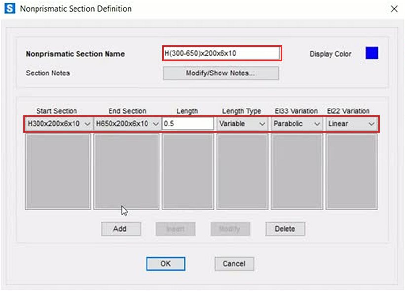

Bài 2.4. Tiết diện thay đổi (Nonprismatic) Nonprismatic (tapered) sections
Cột và kèo PEB có chiều cao thay đổi. SAP2000 mô tả chúng bằng tiết diện Nonprismatic: hai tiết diện đầu và quy luật biến thiên độ cứng giữa chúng.
- Khai báo tiết diện
H(300-650)x200x6x10với EI33 Variation phù hợp. - Hiểu sai số của ba quy luật Linear, Parabolic, Cubic và ảnh hưởng của chiều vẽ I → J.
1. Tình huống
Cột khung nhà xưởng Hòa Bình cao 7,07 m, chân 300 mm, đỉnh 650 mm (H(300-650)x200x6x10). Tỷ số $I_{33}$ giữa hai đầu là 5,6 lần. Nếu khai báo sai quy luật biến thiên hoặc vẽ cột ngược chiều, chuyển vị đỉnh cột và mô men chân cột đều sai.
2. Nội dung chính
SAP2000 nội suy độ cứng giữa đầu I và J theo quy luật bậc $n$: $(EI)^{1/n}$ biến thiên tuyến tính.
Linear: $n = 1$; Parabolic: $n = 2$; Cubic: $n = 3$.
Tiết diện thay đổi (Nonprismatic)
Cột và kèo PEB có chiều cao thay đổi tuyến tính. Cách khai báo:
- Khai báo hai tiết diện đầu: ví dụ
H300x200x6x10(chân cột) vàH650x200x6x10(đỉnh cột). - Add New Property → Other → Nonprismatic:
- Start Section = H300…, End Section = H650…;
- Length = 1, Length Type = Variable;
- EI33 Variation = Parabolic: với I tổ hợp chỉ thay đổi chiều cao, mô men quán tính do hai cánh quyết định nên $I_{33}$ tỷ lệ gần đúng với $h^2$. EI22 Variation = Linear.
- Đặt tên theo quy ước
H(300-650)x200x6x10, giống các nhãn trong video ("H(650-300)x200x6x10", "H500-300x200x6x10").
Hướng của tiết diện thay đổi phụ thuộc chiều vẽ phần tử (điểm I → J). Nếu vẽ cột từ đỉnh xuống chân thì tiết diện bị lật ngược: đầu lớn nằm ở chân. Kiểm tra bằng View Type = Extrude hoặc dùng Assign → Frame → Reverse Connectivity. Với kèo có hai đoạn thay đổi, mỗi đoạn là một phần tử riêng với tiết diện Nonprismatic riêng.
Thiết kế AISC trong SAP2000 kiểm tra tiết diện tại từng trạm (station) với đặc trưng tại trạm đó. Tuy vậy, chiều dài tính toán và $C_b$ tính theo design member. Giới hạn của cách làm này được bàn ở Chương 12 và AISC Design Guide 25.
3. Khám phá
Kéo chiều cao hai đầu và đổi EI33 Variation: đường liền là $I_{33}$ chính xác, các đường nét đứt là ba quy luật SAP2000. Bật "vẽ từ đỉnh xuống chân" để thấy hậu quả của chiều I → J.
4. Ví dụ tính toán
Tính $I_{33}$ tại chân, đỉnh và giữa cột; so với giá trị SAP2000 nội suy theo ba quy luật.
Lời giải
- Chân ($h$ = 300): $I_{33} = (200\times300^3 - 194\times280^3)/12 = 9511$ cm⁴.
- Đỉnh ($h$ = 650): $I_{33} = (200\times650^3 - 194\times630^3)/12 = 53\,466$ cm⁴ (gấp 5,62 lần).
- Giữa ($h$ = 475): chính xác $26\,336$ cm⁴.
- Linear: $(9511 + 53\,466)/2 = 31\,488$ cm⁴ (+19,6 %).
- Parabolic: $\left[(\sqrt{9511} + \sqrt{53\,466})/2\right]^2 = 27\,019$ cm⁴ (+2,6 %).
- Cubic: $25\,490$ cm⁴ (−3,2 %).
- Kết luận: Parabolic và Cubic đều sai dưới 4 %; Linear đánh giá cao độ cứng đoạn giữa gần 20 %.
5. Thực hành SAP2000
- Define
- Section Properties
- Frame Sections
- Add New Property
- Frame Section Property Type = Other
- Nonprismatic
- Start Section, End Section, Length
- Add

6. Lỗi thường gặp
- Chọn EI33 Variation = Linear cho I tổ hợp thay đổi chiều cao: đánh giá cao độ cứng đoạn giữa 20–23 %.
- Vẽ cột từ đỉnh xuống chân mà không kiểm tra Extrude: đầu lớn nằm ở chân.
7. Luyện tập
Với tiết diện I tổ hợp chỉ thay đổi chiều cao bụng, giáo trình khuyến nghị chọn EI33 Variation nào?
Gợi ý
$I_{33}$ của tiết diện I do hai cánh quyết định.
Lời giải
$I_{33} \approx 2A_f(h/2)^2$ tỷ lệ gần đúng với $h^2$ → Parabolic; EI22 Variation = Linear.
Tính $I_{33}$ của tiết diện đầu lớn H650×200×6×10.
Gợi ý
$h_w = 650 - 20 = 630$ mm.
Lời giải
$I_{33} = (200\times650^3 - 194\times630^3)/12 = 53\,466$ cm⁴.
Kèo H(250-500)x200x6x8. Tại giữa đoạn ($h$ = 375 mm), $I_{33}$ chính xác là 13 090 cm⁴. Nếu khai báo EI33 Variation = Linear, SAP2000 lấy $I_{33}$ giữa đoạn lớn hơn giá trị chính xác bao nhiêu phần trăm? (nhập số %)
Gợi ý
Tính $I_{33}$ hai đầu, lấy trung bình cộng rồi so với 13 090.
Lời giải
$I_{250} = 5327{,}5$ cm⁴, $I_{500} = 25\,035{,}8$ cm⁴; Linear: $15\,181{,}6$ cm⁴ → $15\,181{,}6/13\,090{,}2 - 1 = 16{,}0$ %.
- Nonprismatic: hai tiết diện đầu, Length Type = Variable, EI33 = Parabolic, EI22 = Linear.
- Hướng tiết diện theo chiều vẽ I → J; kiểm tra bằng Extrude, sửa bằng Reverse Connectivity.
- Mỗi đoạn kèo thay đổi là một phần tử với tiết diện Nonprismatic riêng.